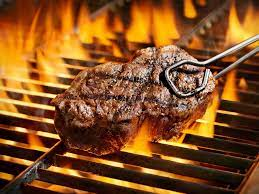
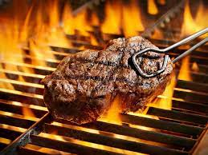

PAKISTANI FOOD
Pakistani cuisine is a tantalizing journey through a rich tapestry of flavors, spices, and culinary traditions that have been perfected over centuries. Nestled in South Asia, Pakistan boasts a vibrant food culture that reflects its diverse heritage, influenced by Mughal, Persian, Central Asian, and indigenous traditions. From aromatic biryanis to sizzling kebabs, and from hearty curries to delectable desserts, Pakistani food is a testament to the country's culinary prowess. Whether you're a fan of fiery spice or prefer milder, savory dishes, Pakistani cuisine offers a diverse array of dishes that are sure to tantalize your taste buds and leave you craving for more. Join us on a culinary adventure as we explore the captivating world of Pakistani food.
SEAFOOD
Seafood, often hailed as the treasure of the ocean, is a culinary delight that has captivated palates worldwide for centuries. This bountiful category of cuisine encompasses a vast array of aquatic delights, from the delicate flavors of flaky fish to the briny sweetness of succulent shellfish. Seafood is not only renowned for its exquisite taste but also for its nutritional richness, providing a wealth of essential vitamins, minerals, and omega-3 fatty acids. Whether enjoyed grilled to perfection, steamed to preserve its natural essence, or incorporated into complex dishes that showcase its versatility, seafood has an enduring allure that transcends borders and cultures. Join us as we dive into the depths of this oceanic world, exploring the diverse and delectable offerings that make seafood an enduring favorite among food enthusiasts worldwide.
Burgers
Few culinary delights can rival the sheer satisfaction of sinking your teeth into a perfectly crafted burger. Born from humble beginnings as a simple sandwich, the burger has evolved into an iconic symbol of comfort food worldwide. Its appeal lies in the harmonious marriage of a juicy, flame-kissed patty nestled between two soft, toasted buns, adorned with an array of mouthwatering toppings. From classic cheeseburgers that evoke a sense of nostalgia to gourmet creations that push the boundaries of flavor, burgers have secured their place as a beloved culinary masterpiece. Join us on a delectable journey through the world of burgers, where every bite is a tantalizing adventure in taste and texture
Pizza
Pizza, the universally cherished circle of culinary delight, transcends borders, cultures, and generations. With its origins rooted in the heart of Italy, this beloved dish has become a global sensation, celebrated for its irresistible combination of flavors, textures, and versatility. A canvas of dough, blanketed with vibrant tomato sauce, a generous sprinkle of mozzarella, and an artful arrangement of toppings, pizza embodies the essence of comfort and culinary craftsmanship. Whether you savor the classic Margherita, indulge in a meat lover's dream, or explore the creative world of gourmet pizza, each slice is a symphony of tastes that ignites the senses and brings people together. Join us on a gastronomic adventure through the delectable universe of pizza, where every bite is a celebration of tradition, innovation, and the simple joy of great food.
BARBECUE
Barbecue, a culinary tradition as rich as the smoky flavors it imparts, has a storied history dating back centuries. Born from the primitive act of cooking over an open flame, barbecue has evolved into an art form that celebrates the marriage of fire, smoke, and carefully seasoned meats. This timeless cooking method, practiced and perfected in regions around the world, transcends cultural boundaries and ignites a passion that unites food enthusiasts far and wide. The sizzle of meat on a grill, the aromatic clouds of wood smoke, and the mouthwatering anticipation of that first tender, flavorful bite—barbecue is more than just a meal; it's a sensory experience deeply rooted in tradition and celebrated for its regional diversity. Join us on a journey through the world of barbecue, where each dish tells a story, and every sauce and rub reflects a unique culinary heritage.